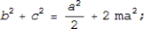
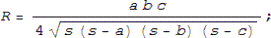
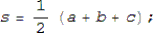
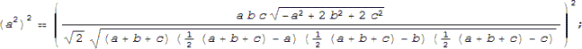
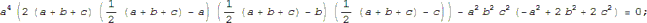
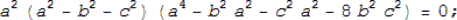
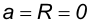
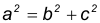
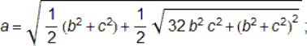

Propuesto por Juan Bosco Romero Márquez, profesor colaborador de la Universidad de Valladolid Problema 270. Un triángulo ABC, verifica entre uno de sus lados a, la mediana correspondiente a ese lado ma, y el radio del círculo circunscrito R, la relación: a^2 = 4 R ma. Probar si es cierto o no que aparte de los triángulos rectángulos en A, hay, al menos otro. Romero, J.B. (2005): Comunicación personal (Dedicado a Murray S. Klamkin)
Solución de José María Pedret, Ingeniero Naval. Esplugues de Llobregat (Barcelona). (11 de julio de 2005) |
|
INTRODUCCION |
|
RELACIÓN ENTRE LA MEDIANAS Y LOS LADOS
 EXPRESIÓN DEL RADIO CIRCUNSCRITO EN FUNCIÓN DE LOS LADOS Y EL SEMIPERÍMETRO

 ECUACIÓN DEL ENUNCIADO
|
|
SOLUCIÓN |
|
PASO I En la ecuación del enunciado, sustituimos R y ma en función de los lados
 PASO II Eliminamos raíces y denominadores e igualamos a cero
 PASO III Simplificamos y descomponemos en factores
 PASO IV El primer factor sería el trivial
 El segundo factor es el del triángulo rectángulo
 El tercer factor es una bicuadrada en a que sólo posee una solución real y positiva
 |